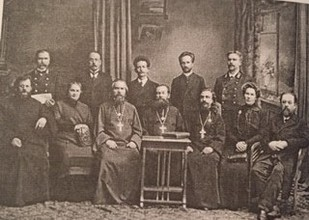
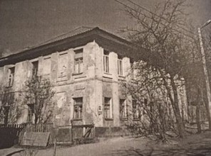
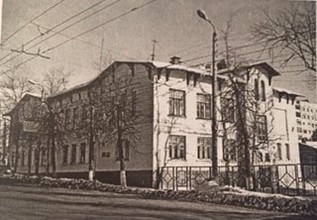

Наш маршрут
Старт
В 1898 году Циолковскому предложили уроки физики в Калужском женском епархиальном училище, являвшемся средним учебным заведением духовного ведомства. Здесь Циолковский проработал около двадцати лет (1899 – июль 1918) учителем арифметики, геометрии и физики. В здании женского епархиального училища сейчас располагается «Гимназия №9 им. К.Э. Циолковского».
Епархиальное училище - закрытое женское учебное заведение ведомства православной русской церкви. Несмотря на это, Циолковский на своих уроках часто демонстрировал опыты и этим способствовал формированию у своих учениц научного понимания законов природы. На уроках физики он всегда старался объяснить загадочные, «божественные» явления с научной точки зрения.
Место02
Здание Калужского уездного училища (ул. Воскресенская,12). Это двухэтажное здание было построено в 1783 году. В нём располагалась Воскресенская богадельня для престарелых инвалидов. В 1830 году по решению духовных властей призреваемых перевели в другую богадельню, а дом было решено снести. Благодаря губернскому архитектору Николаю Фёдоровичу Соколову дом удалось сохранить. Городские власти купили дом, провели там ремонт и в 1834 году в здании было размещено уездное училище.
Уездное училище это вторая (после приходского училища) ступень образования в России XIX века. Такие учебные заведения открывались в губернских и уездных городах для подготовки учащихся «всякого звания». В 2-летний курс образования входили следующие предметы: закон божий, священная история, изучение книги «О должностях человека и гражданина», русская грамматика и грамматика родного языка, чистописание, всеобщая и русская география, всеобщая и русская история, арифметика, начальные сведения по геометрии, физике и естественной истории, рисование. По уставу 1828 года ставшие 3-классными училища в основном предназначались для детей купцов и мещан. В них преподавались закон божий, священная и церковная история, русский язык, арифметика, геометрия, география, русская и всеобщая история, чистописание, черчение и рисование. В 1881 году училище было трехгодичным, в нем обучалось 140 мальчиков. Смотрителем училища был коллежский асессор Аркадий Петрович Соколов, законоучителем - священник Алексей Антонович Беляев, преподавателем русского языка — состоящий в XII классе Яков Федоров Покровский, арифметики и геометрии — коллежский секретарь Семен Григорьевич Прозоровский, истории и географии — состоящий в XII классе Илья Михайлович Ладожин, чистописания, черчения и рисования - губернский секретарь Иван Васильевич Костырев. С февраля 1892 года по август 1900 года арифметику и геометрию преподавал Константин Эдуардович Циолковский. В настоящее время жилой дом.

Место03
МКалуга, пер. Воскресенский, д.4 Казенное реальное училище
В 1896-1897 годах Циолковский по совместительству преподавал математику в Калужском реальном училище. В настоящее время в здании Казенного реального училища размещается один из корпусов Калужского государственного университета им. К.Э. Циолковского. В музее истории КГУ регулярно для посетителей представляются личные документы великого ученого, книги с научными разработками, памятные вещи, связанные с ним.
Место04
Калуга, ул. Луначарского, д.1 Высшее начальное училище
Всего один учебный год с августа 1916 по 1 августа 1917 года К.Э. Циолковский преподавал в Высшем начальном училище. Сейчас в этом здании размещается Средняя общеобразовательная школа №3 г. Калуги.
Место05
г. Калуга, ул. Академика Королева, д. 14
Здание бывшей 6-й советской единой трудовой школы 2-й ступени. Сейчас здесь располагается школа №6
Место06
Калуга, ныне ул. Академика Королева, д. 26

С 1 ноября 1918 по 1 ноября 1921 года К.Э. Циолковский преподавал математику, геометрию и физику в 6-й советской единой трудовой школе 2-й ступени, которая размещалась вначале в здании бывшей Ковригинской богадельни.
О нас
Мы предлагаем уникальные пешие путешествия по историческим местам Калуги. Присоединяйтесь к нашим экскурсиям и узнайте больше о культуре и истории города!
Контакты
Телефон: +7 (123) 456-78-90
Email: info@kalugawalks.ru